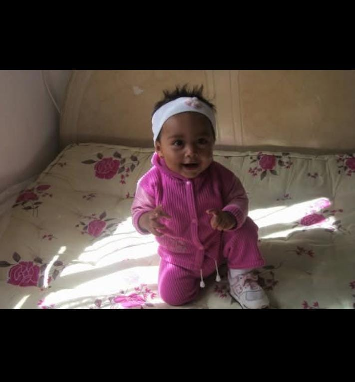
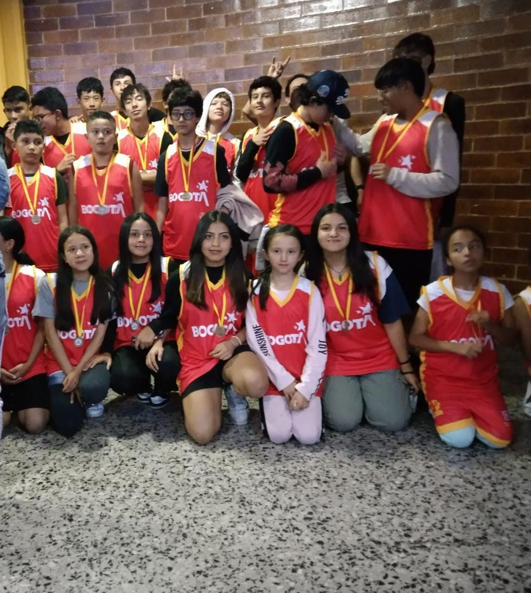
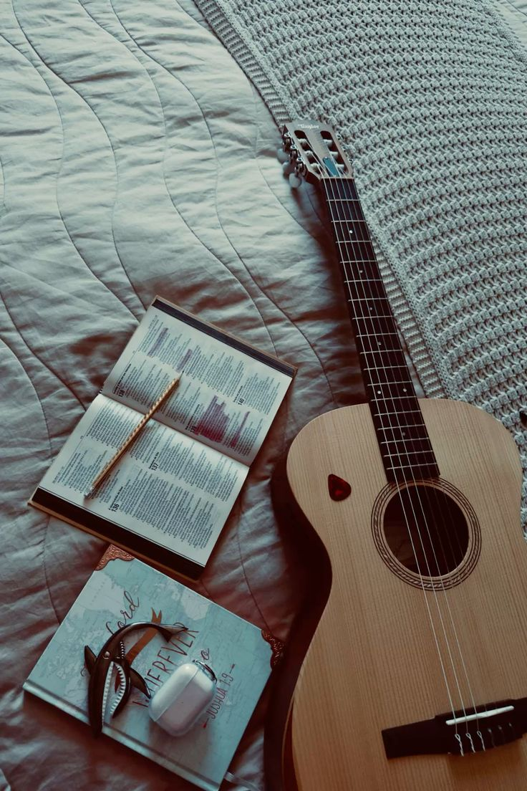

👤 Perfil personal

Soy una persona creativa, perseverante y con muchas ganas de aprender cosas nuevas. Me apasiona la música, especialmente tocar la guitarra, y actualmente estoy aprendiendo a tocar batería.
También disfruto dibujar, jugar básquetbol y patinar. Me gusta trabajar en mis habilidades, descubrir nuevas oportunidades y esforzarme por cumplir mis sueños.
Además, hago parte de un emprendimiento de churros, experiencia que me permite aprender sobre responsabilidad, trabajo en equipo y negocios.
🎸 Mis gustos y pasatiempos



- 💙 Color favorito: azul.
- 🎸 Música: tocar guitarra y aprender batería.
- 🏀 Deportes: básquetbol.
- 🎨 Dibujar y desarrollar mi creatividad.
- 🛹 Patinar.
- 🥨 Participar en el emprendimiento de churros.
- 🎼 Aprender más instrumentos y componer música.
🎯 Mis proyectos a corto plazo
- Mejorar mis habilidades musicales practicando guitarra y batería.
- Aprender nuevas canciones y ritmos.
- Prepararme para ingresar a una universidad relacionada con la música.
- Mejorar mis técnicas de dibujo.
- Fortalecer el emprendimiento de churros.
- Organizar mejor mi tiempo.
- Ser más disciplinada y constante.
- Mantenerme activa practicando básquetbol y patinaje.
🚀 Mis proyectos a largo plazo
- Graduarme como profesional de la música.
- Desarrollarme como guitarrista y baterista.
- Crear mi propio proyecto musical.
- Formar una banda o proyecto artístico.
- Compartir mis propias canciones con otras personas.
- Alcanzar independencia económica.
- Convertir el emprendimiento de churros en una marca reconocida.
- Conocer nuevos lugares y seguir aprendiendo constantemente.
🎓 Mis estudios universitarios
Me gustaría estudiar una carrera relacionada con la música en Colombia.
Algunas de mis opciones son la Universidad Nacional de Colombia y la Universidad Distrital Francisco José de Caldas, instituciones que ofrecen formación artística y musical.
Mi objetivo es investigar los requisitos de ingreso, prepararme adecuadamente y elegir el programa que mejor se adapte a mis intereses y metas profesionales.
⭐ Mi gran sueño

Uno de mis mayores sueños es graduarme como profesional de la música, dominar la guitarra y la batería y llegar a presentarme ante un público.
Quiero demostrarme a mí misma que puedo convertir algo que me apasiona en mi profesión.
También deseo que mi emprendimiento de churros crezca y se convierta en una fuente de oportunidades para mí y mi familia.
💪 Mi compromiso personal
Me comprometo a trabajar por mis sueños con disciplina, paciencia y responsabilidad.
Sé que alcanzar mis metas requiere tiempo, esfuerzo y dedicación, por eso quiero aprovechar las oportunidades que se presenten, aprender de mis errores y continuar desarrollando mis talentos.
Mi propósito es construir un futuro en el que pueda combinar la música, la creatividad y el emprendimiento.